A WALK THROUGH THE WORKSPACE
13 CAPTURES · 01–13Clear work, in good order.
Genuine captures from the running local application, API, Docker CLI, and live PostgreSQL metadata. App screens use API-backed local smoke records; no mock screens are used.

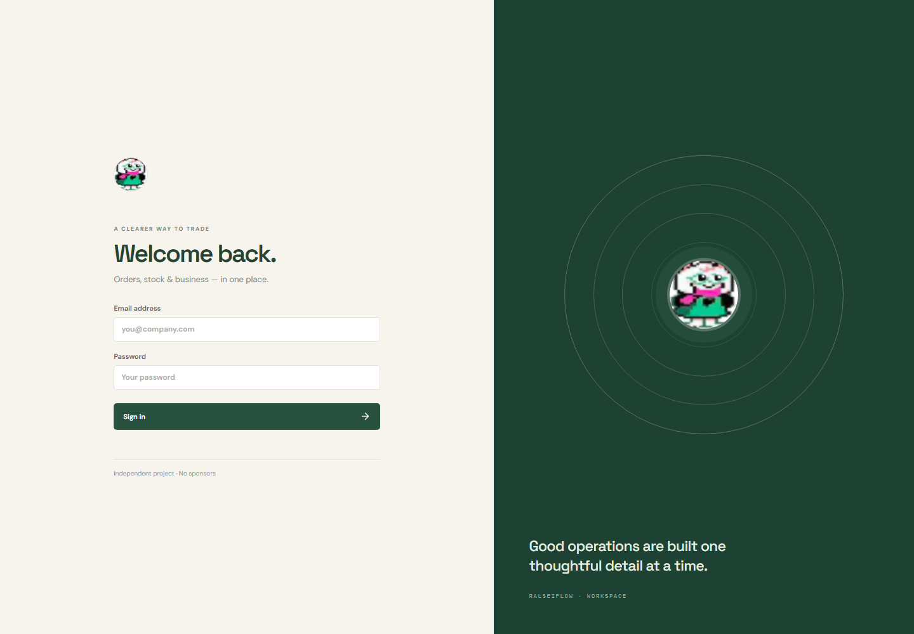
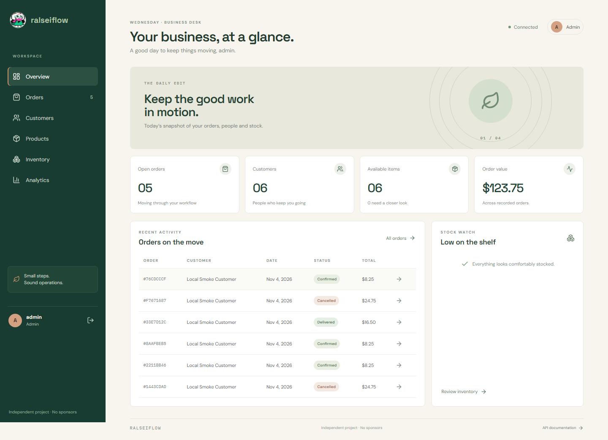
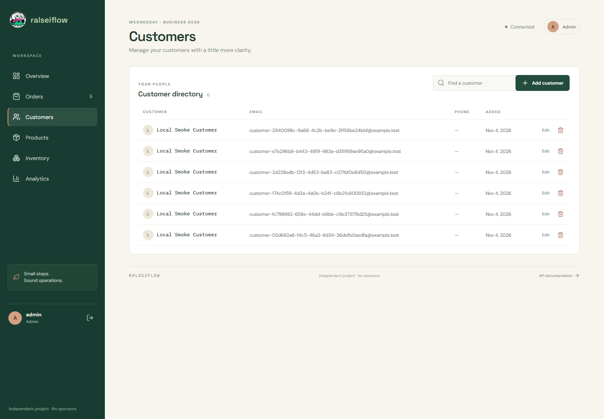
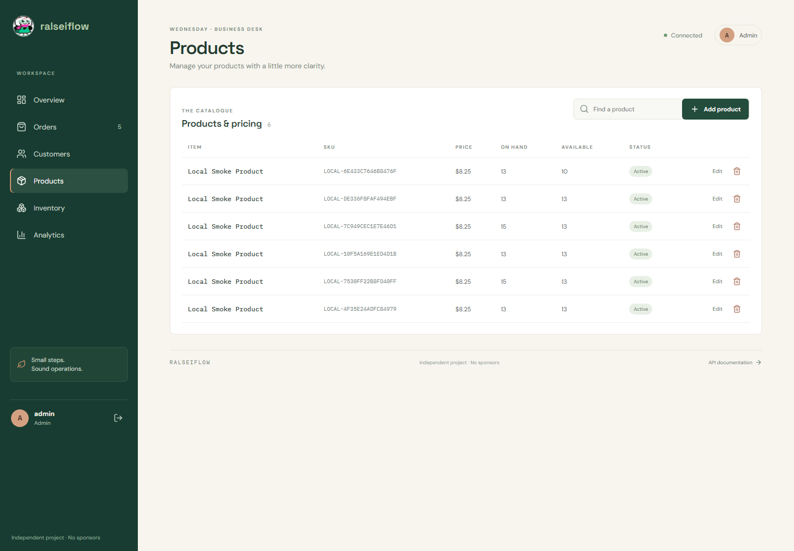
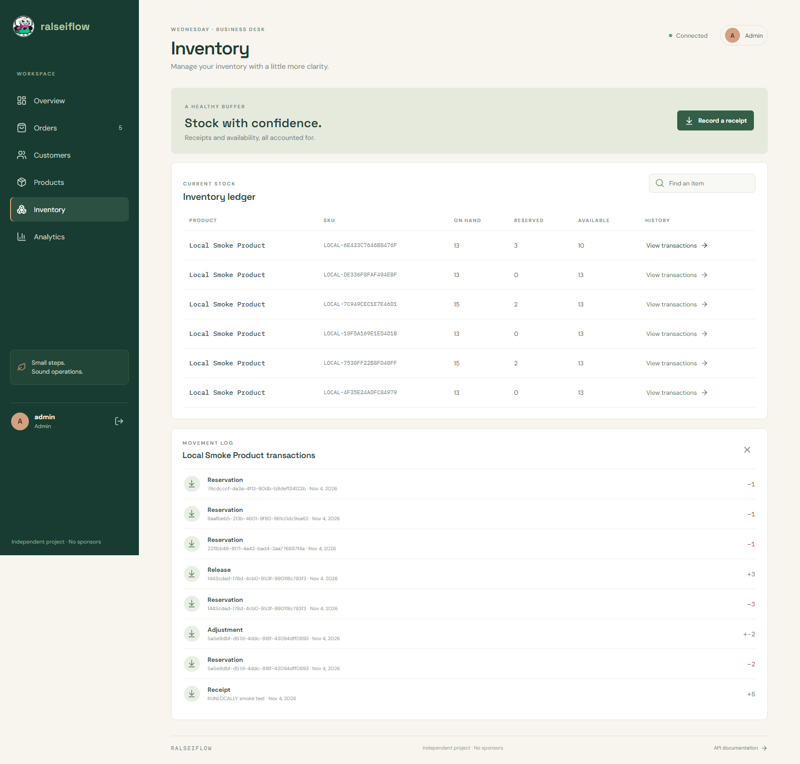
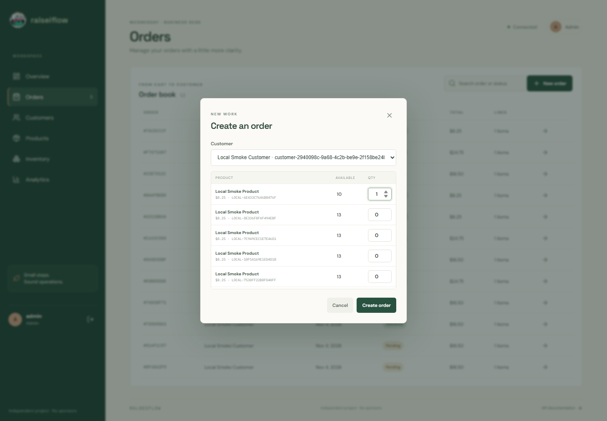
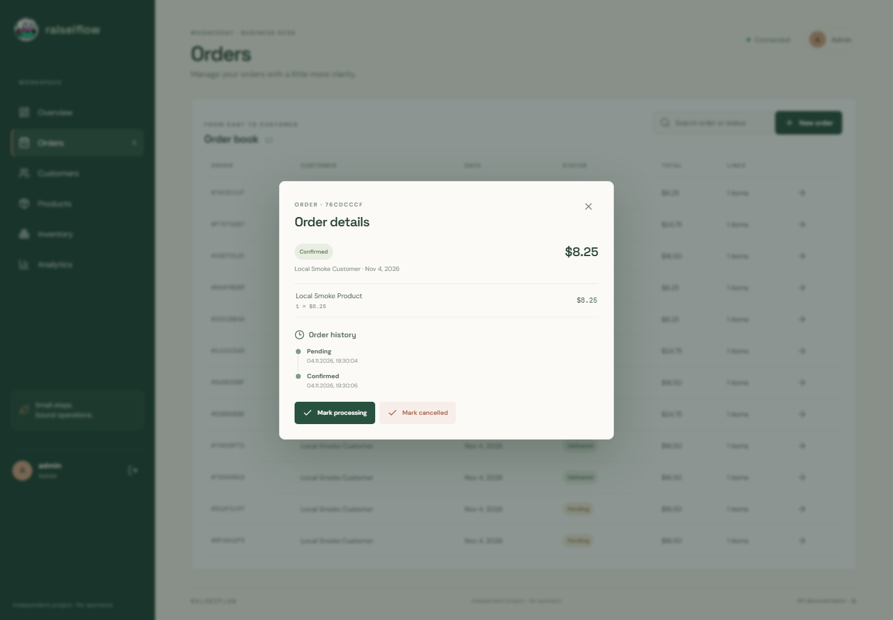
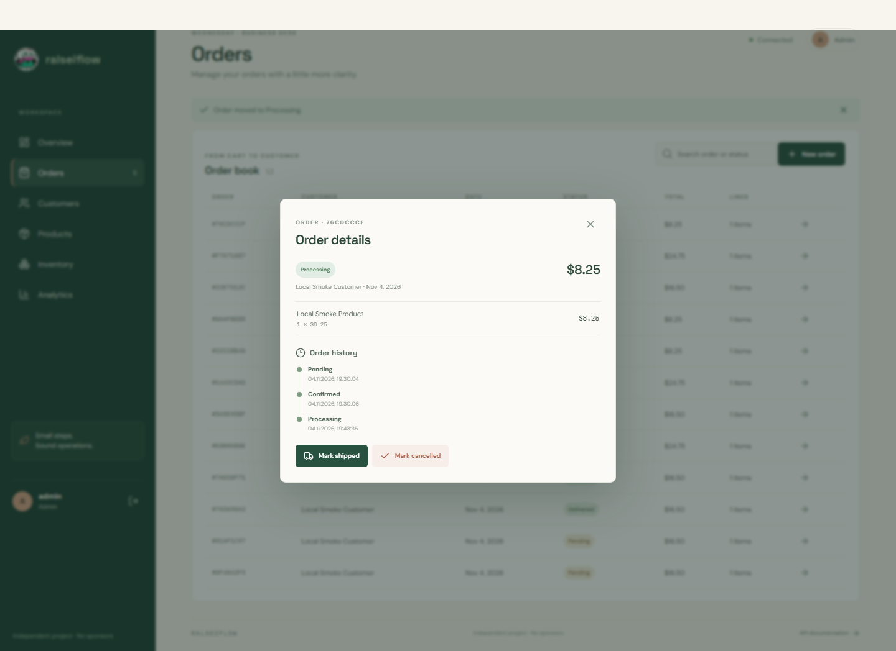
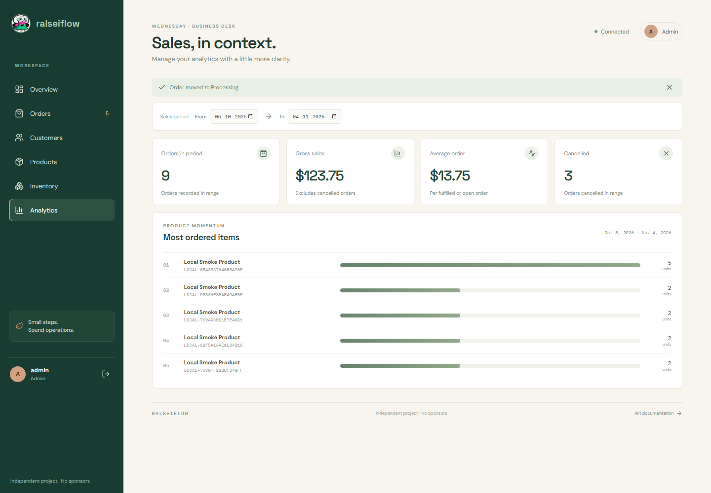
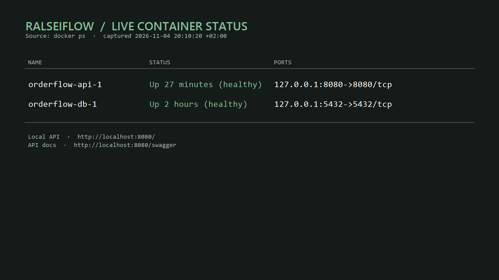
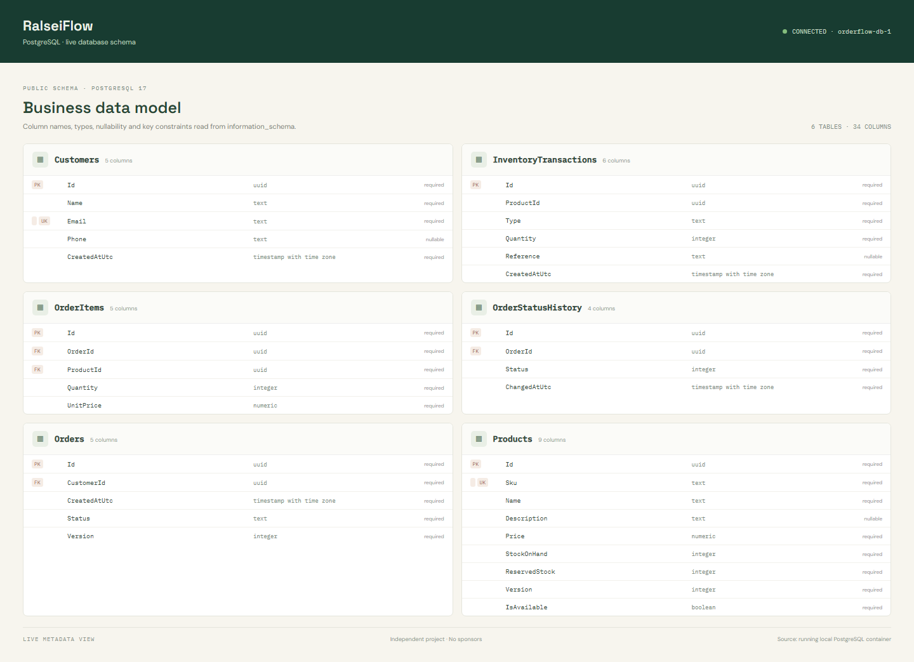
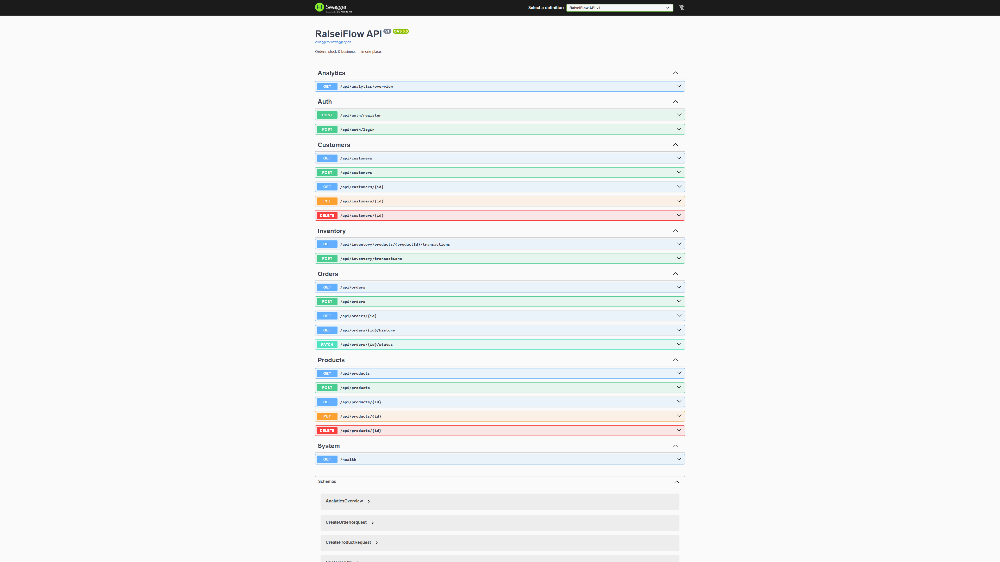